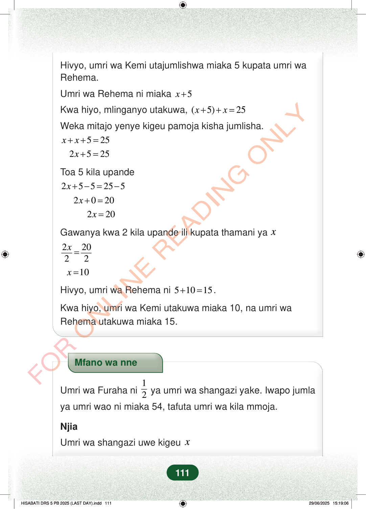

Hivyo, umri wa Kemi utajumlishwa miaka 5 kupata umri waRehema.Umri wa Rehema ni miaka5x+Kwa hiyo, mlinganyo utakuwa,(5)25xx++=Weka mitajo yenye kigeu pamoja kisha jumlisha.525xx++=2525x+=Toa 5 kila upande255255x+−=−2020x+=220x=Gawanya kwa 2 kila upande ili kupata thamani yax22022x=10x=Hivyo, umri wa Rehema ni51015+=.Kwa hiyo, umri wa Kemi utakuwa miaka 10, na umri waRehema utakuwa miaka 15.Mfano wa nneUmri wa Furaha ni12ya umri wa shangazi yake. Iwapo jumlaya umri wao ni miaka 54, tafuta umri wa kila mmoja.NjiaUmri wa shangazi uwe kigeux111
Hivyo, umri wa Kemi utajumlishwa miaka 5 kupata umri wa Rehema.
Umri wa Rehema ni miaka 5 x +
Kwa hiyo, mlinganyo utakuwa, ( 5) 25 x x + + =
Weka mitajo yenye kigeu pamoja kisha jumlisha.
5 25 x x + + =
2 5 25 x + =
Toa 5 kila upande
2 5 5 25 5 x + −= −
2 0 20 x + =
2 20 x =
Gawanya kwa 2 kila upande ili kupata thamani ya x
2 20 2 2 x =
10 x =
Hivyo, umri wa Rehema ni 5 10 15 + = .
Kwa hiyo, umri wa Kemi utakuwa miaka 10, na umri wa Rehema utakuwa miaka 15.
Mfano wa nne
Umri wa Furaha ni 1
2 ya umri wa shangazi yake. Iwapo jumla ya umri wao ni miaka 54, tafuta umri wa kila mmoja.
Njia
Umri wa shangazi uwe kigeu x
111
Hatua za kutatua mlinganyo wa umri zinaonyesha kuwa x = 10. Mwisho wake, Kemi ana miaka 10 na Rehema ana miaka 15.Hivyo, umri wa Kemi utajumlishwa miaka 5 kupata umri wa Rehema.Umri wa Rehema ni miaka <math><mrow><mi>x</mi><mo>+</mo><mn>5</mn></mrow></math>Kwa hiyo, mlinganyo utakuwa, <math><mrow><mrow><mo fence="true" form="prefix" stretchy="false">(</mo><mi>x</mi><mo>+</mo><mn>5</mn><mo fence="true" form="postfix" stretchy="false">)</mo></mrow><mo>+</mo><mi>x</mi><mo>=</mo><mn>25</mn></mrow></math>Weka mitajo yenye kigeu pamoja kisha jumlisha.x+x+5=252x+5=25Toa 5 kila upande2x+5-5=25-52x+0=202x=20Gawanya kwa 2 kila upande ili kupata thamani ya <math><mi>x</mi></math><math><mrow><mfrac><mrow><mn>2</mn><mi>x</mi></mrow><mn>2</mn></mfrac><mo>=</mo><mfrac><mn>20</mn><mn>2</mn></mfrac></mrow></math>x=10Hivyo, umri wa Rehema ni <math><mrow><mn>5</mn><mo>+</mo><mn>10</mn><mo>=</mo><mn>15</mn></mrow></math>.Kwa hiyo, umri wa Kemi utakuwa miaka 10, na umri wa Rehema utakuwa miaka 15.Mfano wa nne unauliza umri wa Furaha na shangazi yake kama Furaha ni nusu ya umri wa shangazi yake na jumla yao ni miaka 54. Njia inaanza kwa kuweka umri wa shangazi kuwa x.Mfano wa nneUmri wa Furaha ni <math><mfrac><mn>1</mn><mn>2</mn></mfrac></math> ya umri wa shangazi yake.Iwapo jumla ya umri wao ni miaka 54, tafuta umri wa kila mmoja.NjiaUmri wa shangazi uwe kigeu <math><mi>x</mi></math>